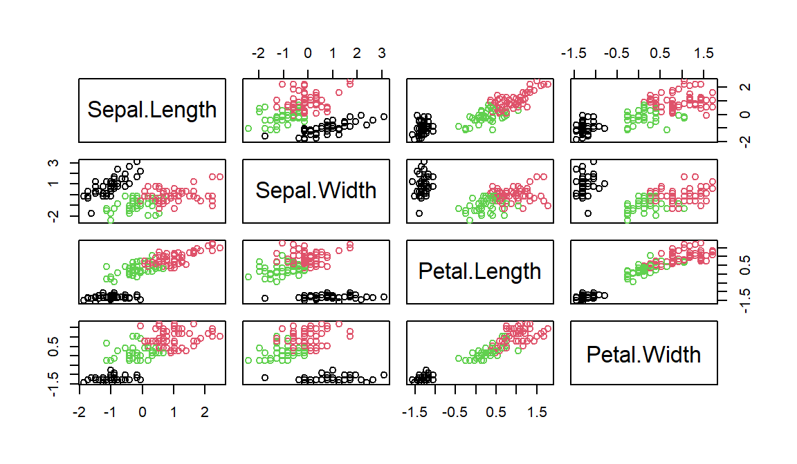
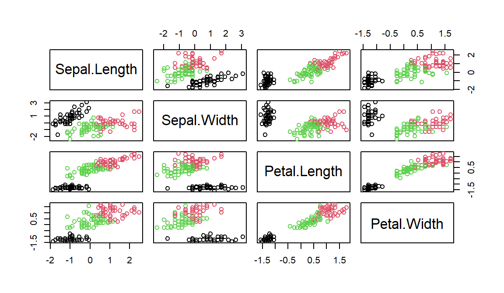
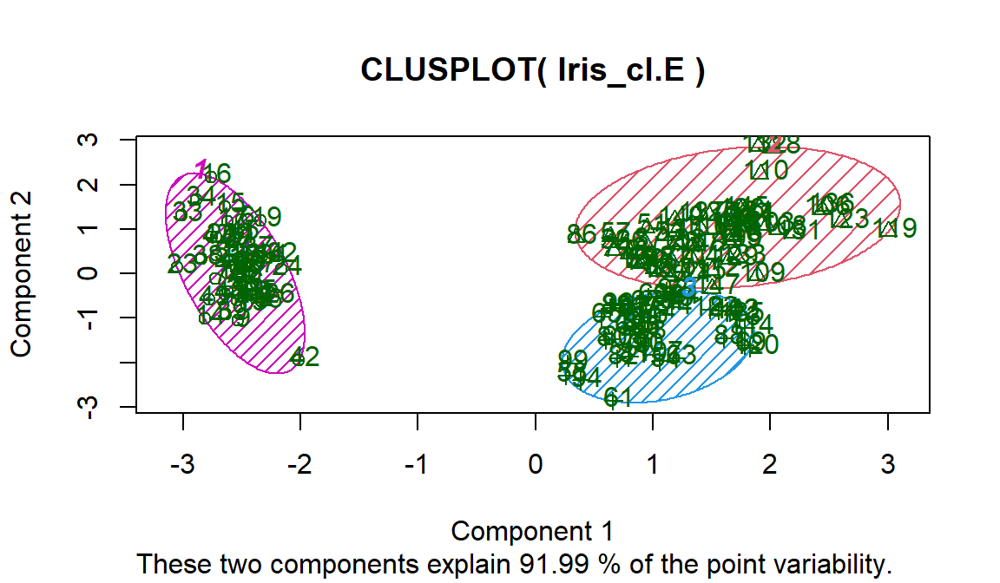
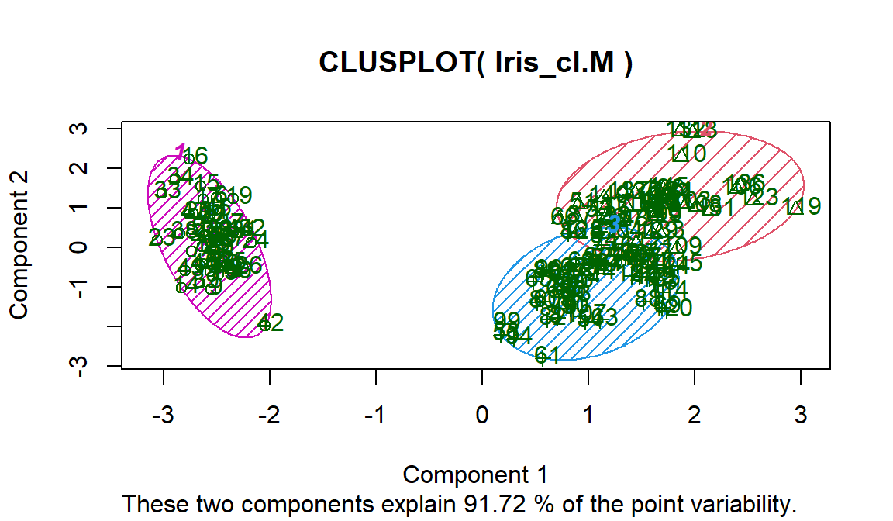

3 Exercise 2: Iris data
In Lab 3, we studied the Iris flower data which contain measurements of the length and the width of sepals and petals for three species of Iris. For this exercise, we temporarily ignore the species information and perform \(K\)-medoids clustering.
QUESTION:
- Perform \(K\)-medoids clustering with \(K=3\), first using the Euclidean distance and then using the Manhattan distance. Visualise the clusters using both
plotandclusplot.
Suppose we would like to group the data into 3 clusters. The corresponding R code is:
set.seed(1)
Iris <- data.frame(scale(iris[,-5]))
Iris_pam.E <- pam(Iris, k=3, metric="euclidean", nstart=100)
Iris_pam.M <- pam(Iris, k=3, metric="manhattan", nstart=100)
# plot
plot(Iris, col=Iris_pam.E$clustering)
plot(Iris, col=Iris_pam.M$clustering)
# clusplot
Iris_cl.E <- data.frame(Iris, Iris_pam.E$clustering)
Iris_cl.M <- data.frame(Iris, Iris_pam.M$clustering)
clusplot(Iris_cl.E, Iris_pam.E$clustering, color=TRUE, shade=TRUE,
labels=2, lines=0)
clusplot(Iris_cl.M, Iris_pam.M$clustering, color=TRUE, shade=TRUE,
labels=2, lines=0)
- Use the average silhouette width to determine which clustering performance is better.
The silhouette information has already been computed in pam and can be accessed using silinfo (and avg.width for average silhouette width).
print(c(Iris_pam.E$silinfo$avg.width,Iris_pam.M$silinfo$avg.width))## [1] 0.4507912 0.4957301As higher average silhouette width suggests better clustering, we would prefer the results obtained from \(K\)-medoids with the Manhattan distance.
- (optional) Compare the clustering assignment with the ground-truth species type. Which clustering method generates more consistent labels?
Again, we can use the corrected Rand index to compare the similarity between two sets of labels.
d <- dist(Iris)
cl.E.stats <- cluster.stats(d, Iris_pam.E$clustering, as.numeric(iris$Species))
cl.M.stats <- cluster.stats(d, Iris_pam.M$clustering, as.numeric(iris$Species))
print(c(cl.E.stats$corrected.rand, cl.M.stats$corrected.rand))## [1] 0.6764545 0.7021066As higher value suggests more points are assigned to the same cluster, we would prefer \(K\)-medoids with the Manhattan distance.